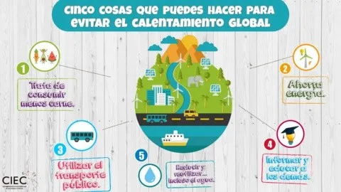

<HTML>


</html>

      <HEAD>
             <TITLE>Calentamiento global 4</title>
      </HEAD>

<H1>¿Qué debo hacer para evitar el calentamiento global?</H1>

<p><h3>Se postula que si el aumento de la temperatura promedio global es mayor a 4ºC comparado con las temperaturas preindustriales, en muchas partes del mundo ya los sistemas naturales no podrán adaptarse y, por lo tanto, no podrán sustentar a la población en la manera en que se agotaran los recursos naturales. Descarbonizar el sector energético Alrededor del planeta, cada vez son más los países que asumen mayor responsabilidad en la lucha contra el cambio climático. En la cumbre sobre el clima celebrada en el 2015 en París, 195 países se comprometieron a reducir sus emisiones de gases de efecto invernadero, a fin de limitar el calentamiento futuro a no más de 2 grados Celsius. Él acuerdo nos encamina indudablemente en la dirección correcta. Pero hay que recalcar la importancia crítica del involucramiento ciudadano, o sea, las aportaciones de individuos como tú. “El cambio se consigue cuando el individuo se moviliza por sí solo”, asevera Aliya Haq, directora auxiliar de la iniciativa Plan para Energía Limpia del Consejo para la Defensa de los Recursos Naturales. “Si no surge de la gente misma, no hay manera de lograr nada”.</h3></p>
<div>

<ul>

<p><h3><li>Reducir la demanda de energía: al evitar el alto consumo de energía ayudamos a disminuir los gases de efecto invernadero y, con ello, las consecuencias del cambio climático. La otra es económica, ya que consumiendo menos electricidad, la factura a cancelar será menor.</li></h3></p>

<p><h3><li>Mejorar la eficiencia energética: capacidad para obtener los mejores resultados en cualquier actividad empleando la menor cantidad posible de recursos energéticos. Nos permite reducir el consumo de cualquier tipo de energía y con ello los posibles impactos ambientales asociados a ella.</li></h3></p>

<p><h3><li>Desarrollar las energías renovables: son un tipo de energías derivadas de fuentes naturales que llegan a reponerse más rápido de lo que pueden consumirse. </li></h3></p>

<p><h3><li>Transporte sostenible: electrificación y energías limpias, pero también de planificación urbana y de transformaciones sociales.</li></h3></p>

<p><h3><li>Reducir la deforestación: Los bosques sanos limpian el aire y regulan el clima. Los bosques vivos sostienen la vida: benefician a las personas, a las plantas y a los animales por todo el trabajo invisible que realizan como almacén de carbono.</li></h3></p>

<p><h3><li>Utilizar combustibles bajos en carbono y abandonar los fósiles: cuando los humanos los queman, el carbono es liberado a la atmósfera en forma de dióxido de carbono.</li></h3></p>

<p><h3><li>Promoción de la economía verde: mejor bienestar humano y equidad social, reduciendo significativamente los riesgos ambientales y las escaseces ecológicas.</li></h3></p>

<p><h3><li>Gestión de los cultivos y los sistemas ganaderos: Son sistemas en los que el ganado está sometido a cualquier combinación de métodos de cría extensivo e intensivo, o bien simultáneamente o bien de forma alternada, según cambien las condiciones climáticas y el estado fisiológico del ganado.</li></h3></p>

<p><h3><li>Implicación de todos los actores sociales: permite superar la mera descripción objetiva de las inclusiones y recorridos de los actores sociales por las organizaciones</li></h3></p>

<br>
<center></center>
<br>
<center></center>
<br>
<li>Enseñe a los estudiantes acerca del cambio climático y los ecosistemas. Use los recursos para maestros en la Guía Estudiantil de la EPA acerca del cambio climático.</li>

<li>Involucre a los estudiantes de escuela intermedia en estimar las emisiones.</li>

<li>Aprenda de otros educadores.</li>

</div>

</ul>

<p><h3>Reacción integral para evitar el calentamiento global
"Necesitamos emprender una transformación transversal que englobe no solo la energía sino también el conjunto de la economía, la producción industrial, el sector financiero o una concepción de ciudades más sostenibles y resilientes", enumeraba en el mismo foro Teresa Ribera, ministra para la Transición Ecológica del Gobierno de España.</h3></p>

<p><h3>En su opinión, solo será posible mediante la conexión con las "causas raíz" de la amenaza, si los humanos dejan de ver el cambio climático como "algo exógeno y no endógeno", tienen en cuenta las variables sociales y reflexionan sobre su repercusión en la salud del mundo y cómo pueden evolucionar para reducir ese impacto o cambiarlo por una huella positiva.</h3></p>

<a href="https://calentamientoglobal.github.io/github.io/CALENTAMIENTOGLOBAL.HTML">Volver a la página...</a>


</body>


</HTML>
